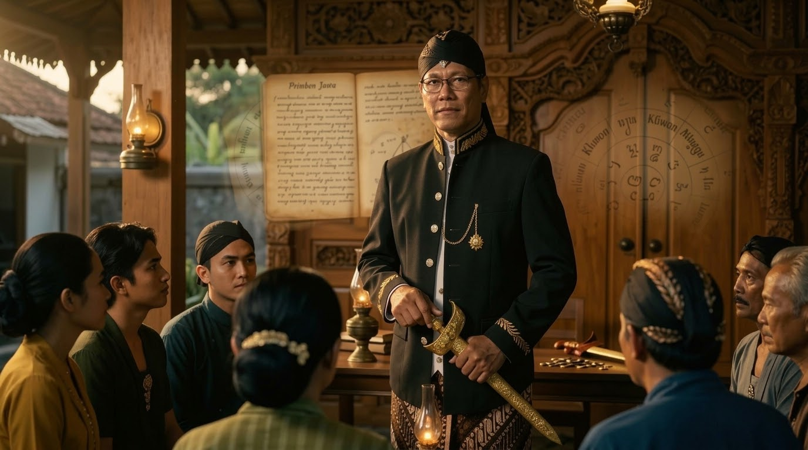

NAWA PANGAWIKANING DHIRI

Nawa Pangawikaning Dhiri merupakan sembilan tataran laku untuk mengenali diri secara bertahap melalui pengamatan, mawas dhiri, pembersihan batin, dan pembenahan laku kehidupan.
Dalam Kawruh Uttamopadesa, pengenalan diri tidak berhenti pada pertanyaan “siapa aku?”, tetapi diarahkan kepada pengenalan yang nyata melalui hubungan antara cipta, rasa, karsa, laku, dan Tatananing Panguripan.
Pangawikaning dhiri bukan sekadar kegiatan berpikir mengenai diri sendiri. Manusia dapat memikirkan dirinya sepanjang hidup, tetapi pemikiran mengenai diri belum tentu menunjukkan kasunyatan dirinya. Pemikiran dapat dipengaruhi pengalaman, keinginan, kebiasaan, rasa suka dan tidak suka, bahkan pamrih yang tidak disadari.
Karena itu, Kawruh Uttamopadesa menempatkan pengenalan diri sebagai laku.
Aspek Diri dikenali melalui apa yang benar-benar terjadi dalam panguripan: bagaimana raga digunakan, bagaimana indriya menerima keadaan, bagaimana cipta membentuk pemikiran, bagaimana rasa bergerak, bagaimana karsa melahirkan tindakan, bagaimana laku menghasilkan buah, serta bagaimana manusia mengenali berbagai penghalang yang masih menutupi pamawas.
Dari keseluruhan laku tersebut tumbuh keselarasan. Keselarasan itulah yang membuka jalan menuju kesadaran terhadap Jatining Dhiri.
Dengan demikian, Nawa Pangawikaning Dhirimerupakan sembilan tataran laku untuk mengenali diri secara bertahap bukan titik awal yang harus dipercayai terlebih dahulu, melainkan buah luhur dari laku pangawikaning dhiri.
Hubungan Pangawikaning Dhiri dengan Kawruh Sejati.
Dalam kerangka Kawruh Uttamopadesa, manusia perlu membedakan antara Kawruh Sejati dan pemahaman manusia mengenai kasunyatan.
Kawruh Sejati bukan sekadar kumpulan pengetahuan hasil pemikiran manusia. Kawruh Sejati merupakan pepadhang yang menjadi dasar bagi manusia untuk mengenali kasunyatan. Adapun pemahaman manusia terhadap kasunyatan merupakan proses ngaweruhi, yaitu proses memahami, mengolah, menguji, dan mewujudkannya dalam laku.
Karena itu, Pangawikaning Dhiri merupakan bagian dari perjalanan manusia dalam menerima dan mewujudkan pepadhang kawruh tersebut dalam panguripan.
Kawruh tidak cukup hanya diketahui. Kawruh harus kawruhan, kasumurupan, dilakoni, dan akhirnya katon kasunyatane ing panguripan.
Dari sinilah prinsip penting Uttamopadesa dapat dipahami: kawruh yang belum mengubah laku belum sepenuhnya menjadi kawruh yang hidup. Pangawikaning dhiri menjadi jalan untuk melihat perubahan tersebut secara nyata.
Jatining Dhiri sebagai Buah Laku.
Jatining Dhiri tidak dapat ditetapkan hanya berdasarkan pengakuan seseorang mengenai dirinya sendiri. Manusia dapat mengatakan bahwa dirinya telah mengetahui hakikat diri, tetapi kehidupan sehari-hari justru menjadi ukuran apakah pemahaman tersebut benar-benar telah menjadi laku.
Apabila cipta masih dipenuhi keruwetan, rasa masih mudah dikuasai pamrih, karsa masih didorong keinginan yang tidak terawat, dan laku masih menghasilkan pertentangan, maka pangawikaning dhiri masih perlu dilanjutkan.
Sebaliknya, ketika cipta semakin wening, rasa semakin bening, karsa semakin utama, dan laku semakin selaras dengan Tatananing Panguripan, manusia mulai mengenali dirinya secara lebih jernih.
Karena itu, Jatining Dhiri bukan sesuatu yang perlu dibayangkan. Ia semakin dapat dikenali melalui perubahan nyata dalam kehidupan.
NAWA TATARAN PANGAWIKANING DHIRI.
1. Mengenali Raga.
Raga merupakan sarana utama manusia untuk menjalani panguripan. Dengan raga manusia bergerak, bekerja, berhubungan dengan sesama, menerima keadaan, dan melaksanakan berbagai laku kehidupan. Karena itu, pangawikaning dhiri dimulai dari sesuatu yang paling dekat dan paling nyata: raga.
Mengenali raga bukan sekadar mengetahui bentuk tubuh dan kebutuhan jasmani. Yang lebih penting adalah memahami fungsi, keadaan, dan keterbatasan raga.
Raga dapat kuat dan lemah, sehat dan sakit, segar dan lelah. Semua keadaan tersebut merupakan bagian dari perubahan panguripan. Raga tidak berada dalam keadaan yang tetap. Oleh sebab itu, manusia tidak sepatutnya menjadikan raga sebagai satu-satunya dasar pengenalan dirinya.
Raga adalah wahana, sarana untuk menjalani kehidupan, bukan keseluruhan Jatining Dhiri.
Pengenalan terhadap raga juga mengajarkan manusia untuk membedakan kebutuhan dengan keinginan. Kebutuhan perlu dipenuhi agar raga dapat menjalankan fungsinya dengan baik. Sebaliknya, keinginan yang tidak terawat dapat membuat manusia semakin terikat kepada kenikmatan lahiriah.
Raga harus dirawat, tetapi tidak dipertuhankan. Raga harus digunakan, tetapi tidak dibiarkan menjadi penguasa laku. Melalui pengenalan raga, manusia mulai belajar bahwa kehidupan tidak berhenti pada apa yang tampak secara lahiriah. Dari sinilah perjalanan pangawikaning dhiri berlanjut menuju indriya.
2. Mengenali Indriya.
Indriya merupakan sarana manusia menerima berbagai tanda dari panguripan. Penglihatan, pendengaran, penciuman, pengecap, dan rasa tubuh memberikan pengalaman yang kemudian diolah dalam cipta.
Namun, apa yang diterima indriya tidak selalu merupakan kasunyatan secara utuh. Indriya hanya menerima tanda sesuai dengan kemampuannya. Cipta kemudian memberikan tafsir terhadap tanda tersebut.
Sesuatu yang terlihat indah dapat menimbulkan rasa suka. Kata-kata seseorang dapat menimbulkan rasa senang ataupun marah. Makanan dapat membangkitkan keinginan. Keadaan tertentu dapat menimbulkan rasa nyaman ataupun tidak nyaman.
Karena itu, manusia perlu membedakan antara apa yang diterima indriya dan apa yang kemudian dibentuk oleh cipta.
Mengenali indriya berarti belajar mawas terhadap proses tersebut. Indriya bukan penguasa kehidupan. Indriya merupakan pintu untuk menerima pengalaman. Apa yang masuk melalui pintu tersebut masih perlu diolah dengan cipta yang wening dan rasa yang bening.
Jika manusia langsung mengikuti setiap kesan indriya, kehidupannya mudah dikendalikan oleh apa yang tampak, terdengar, terasa, atau memberikan kenikmatan.
Sebaliknya, apabila indriya digunakan dengan mawas, manusia dapat menerima keadaan tanpa langsung menjadi terikat kepadanya.Dari sini manusia mulai memasuki tataran pengenalan terhadap cipta.
3. Mengenali Cipta.
Cipta merupakan daya untuk membentuk pemikiran, pertimbangan, angan-angan, dan pemahaman. Apa yang diterima melalui indriya dapat diolah oleh cipta menjadi berbagai pemikiran. Karena itu, cipta memiliki peran besar dalam kehidupan manusia.
Namun, cipta tidak selalu menghasilkan pemahaman yang sesuai dengan kasunyatan. Pemikiran dapat dibentuk oleh pengalaman, kebiasaan, harapan, ketakutan, keinginan, rasa suka, rasa benci, dan berbagai pengaruh lainnya.
Karena itu, mengenali cipta berarti belajar melihat bagaimana sebuah pemikiran muncul dan dari mana pemikiran tersebut berasal. Manusia tidak perlu langsung percaya kepada setiap pemikiran yang muncul dalam dirinya. Namun, manusia juga tidak perlu menolaknya secara tergesa-gesa.
Pemikiran perlu diamati dengan pamawas yang wening. Dengan demikian, manusia mulai dapat membedakan antara kasunyatan dengan tafsir terhadap kasunyatan.
Kasunyatan tidak berubah hanya karena manusia memikirkannya secara berbeda. Yang perlu dibenahi adalah cara manusia melihat dan memahami kasunyatan.
Cipta yang wening tidak berarti cipta berhenti berpikir. Cipta yang wening adalah cipta yang mampu berpikir tanpa dikuasai oleh pikirannya sendiri. Ketika cipta semakin wening, jalan menuju pengenalan rasa mulai terbuka.
4. Mengenali Rasa.
Rasa memberikan warna pada pengalaman kehidupan. Melalui rasa manusia mengalami kegembiraan, kesedihan, ketenteraman, kekhawatiran, kasih, kebencian, ketakutan, dan berbagai gerak batin lainnya.
Rasa merupakan bagian penting dari panguripan. Karena itu, pangawikaning dhiri tidak mengajarkan manusia untuk meniadakan rasa. Yang perlu dilakukan adalah mengenali rasa tanpa menjadi budaknya.
Rasa dapat berubah mengikuti keadaan. Rasa senang dapat berubah menjadi kecewa. Rasa takut dapat berubah menjadi keberanian. Rasa benci dapat berubah ketika manusia memperoleh pemahaman baru.
Karena rasa selalu bergerak, manusia perlu belajar mengamatinya.Ketika rasa muncul, manusia tidak harus langsung mengikutinya.
Rasa suka tidak selalu berarti sesuatu itu harus dikejar. Rasa tidak suka tidak selalu berarti sesuatu itu harus ditolak. Rasa takut tidak selalu berarti keadaan harus dihindari.
Rasa yang bening bukan rasa yang kosong, melainkan rasa yang tidak lagi dikaburkan oleh keterikatan, pamrih, dan keinginan yang tidak terawat.Rasa yang bening memberikan ruang bagi cipta untuk melihat dengan lebih jernih dan bagi karsa untuk menentukan arah laku dengan lebih tepat. Dari sinilah pangawikaning dhiri memasuki tataran karsa.
5. Mengenali Karsa.
Karsa merupakan daya yang menggerakkan kehendak dan melahirkan tindakan. Jika cipta berhubungan dengan pemikiran dan rasa berhubungan dengan gerak rasa, maka karsa menunjukkan bagaimana manusia menentukan arah kehendaknya. Karena itu, mengenali karsa berarti melihat apa yang sebenarnya menggerakkan suatu tindakan.
Sebuah tindakan dapat terlihat baik dari luar, tetapi belum tentu memiliki dasar karsa yang baik. Tindakan dapat dilakukan karena kasih, tetapi dapat pula dilakukan karena ingin dipuji. Seseorang dapat membantu sesama karena ketulusan, tetapi dapat pula karena ingin memperoleh pengakuan.
Karena itu, pangawikaning dhiri tidak hanya melihat apa yang dilakukan, tetapi juga melihat dasar kehendak yang melahirkan tindakan tersebut. Manusia perlu mawas: Apa yang sebenarnya mendorong laku ini?
Apakah karsa tersebut lahir dari cipta yang wening dan rasa yang bening? Ataukah masih dipengaruhi pamrih, kesombongan, ketakutan, kebencian, atau keinginan untuk menguasai?
Karsa yang utama tidak berarti manusia kehilangan kehendak. Karsa yang utama adalah kehendak yang semakin selaras dengan Tatananing Panguripan. Ketika karsa telah dikenali, manusia perlu melihat hasil nyatanya melalui laku.
6. Mengenali Laku.
Laku merupakan wujud nyata dari cipta, rasa, dan karsa. Apa yang dipikirkan, dirasakan, dan dikehendaki pada akhirnya akan memiliki jejak dalam kehidupan. Jejak tersebut dapat terlihat melalui ucapan, tindakan, pekerjaan, hubungan dengan sesama, serta cara manusia menghadapi berbagai keadaan.
Karena itu, laku menjadi salah satu cermin paling nyata dalam pangawikaning dhiri. Manusia dapat membangun gambaran mengenai dirinya melalui pikiran dan kata-kata. Namun, laku sehari-hari menunjukkan bagaimana pemahaman tersebut benar-benar bekerja.
Laku yang menimbulkan keruwetan menunjukkan adanya sesuatu yang masih perlu dibenahi. Laku yang menghadirkan ketenteraman, manfaat, kasih, dan keselarasan menjadi tanda bahwa cipta, rasa, dan karsa mulai tertata.
Mengenali laku bukan berarti terus-menerus menyalahkan diri. Mawas laku berarti berani melihat buah tindakan secara jujur, menerima pelajaran darinya, kemudian memperbaiki apa yang masih belum selaras.
Dalam Uttamopadesa, kawruh dan laku tidak dapat dipisahkan. Kawruh menuntun laku, dan laku menguji kawruh dalam panguripan. Karena itu, laku menjadi jembatan antara pemahaman dengan kasunyatan kehidupan.
Dari pengamatan terhadap laku, manusia mulai dapat melihat penghalang yang masih tersembunyi dalam dirinya.
7. Mengenali Penghalang.
Penghalang merupakan segala sesuatu dalam diri yang menutupi pamawas terhadap kasunyatan dan menghambat keselarasan laku. Penghalang tidak selalu tampak secara lahiriah. Bahkan, penghalang sering kali bersembunyi di balik sesuatu yang dianggap benar oleh manusia.
Kesombongan dapat membuat seseorang merasa tidak perlu belajar. Keterikatan dapat membuat manusia sulit menerima perubahan. Ketakutan dapat membuat manusia enggan menghadapi kasunyatan. Kebencian dapat mengaburkan pandangan. Keinginan yang tidak terawat dapat membuat manusia terus mengejar sesuatu tanpa mengenali batas.
Penghalang juga dapat berupa keterikatan terhadap pemikiran sendiri. Manusia dapat begitu yakin terhadap pandangannya sehingga tidak lagi mampu melihat keadaan sebagaimana adanya. Karena itu, penghalang tidak diselesaikan dengan memusuhi diri sendiri. Penghalang perlu dikenali, dipahami, dan diolah melalui mawas dhiri.
Ketika seseorang mampu melihat kesombongannya tanpa membenarkannya, melihat keterikatannya tanpa menyembunyikannya, dan melihat pamrihnya tanpa menutup-nutupinya, maka penghalang mulai kehilangan kekuatannya.
Cahaya kawruh tidak tumbuh melalui paksaan, tetapi melalui keweningan dalam melihat keadaan. Semakin penghalang berkurang, semakin terbuka jalan menuju keselarasan.
8. Mengenali Keselarasan.
Keselarasan merupakan keadaan ketika cipta, rasa, karsa, dan laku tidak lagi berjalan saling bertentangan. Cipta yang wening memberikan kejernihan. Rasa yang bening memberikan ketenangan. Karsa yang utama memberikan arah. Laku kemudian mewujudkan semuanya dalam panguripan.
Keselarasan bukan berarti kehidupan tidak pernah mengalami keruwetan. Manusia tetap menghadapi perubahan, kehilangan, perbedaan, kegagalan, dan berbagai keadaan yang tidak selalu sesuai dengan kehendaknya. Yang berubah adalah cara manusia menghadapinya.
Ketika keselarasan mulai tumbuh, manusia tidak mudah kehilangan kejernihan hanya karena keadaan berubah. Kebahagiaan tidak membuatnya berlebihan dalam kesombongan, sedangkan keruwetan tidak membuatnya kehilangan arah. Keselarasan juga tidak berhenti pada diri sendiri.
Manusia hidup bersama sesama, alam, dan berbagai keadaan dalam panguripan. Karena itu, keselarasan harus terlihat dalam hubungan dan tindakan.
Cipta, rasa, dan karsa yang benar-benar selaras akan menemukan wujudnya dalam laku yang menjaga kehidupan, menghormati sesama, dan tidak menciptakan keruwetan yang sebenarnya dapat dihindari.
Pada tataran inilah pangawikaning dhiri mulai memasuki kedalaman terakhir: mengenali Jatining Dhiri.9. Mengenali Jatining Dhiri.
Mengenali Jatining Dhiri merupakan tataran terakhir Nawa Pangawikaning Dhiri. Namun, “terakhir” tidak berarti sebuah akhir perjalanan. Jatining Dhiri merupakan buah dari laku yang telah dijalani melalui tataran-tataran sebelumnya.
Manusia telah belajar mengenali raga, indriya, cipta, rasa, karsa, laku, penghalang, dan keselarasan. Dari seluruh proses tersebut, pandangan terhadap dirinya semakin jernih.
Jatining Dhiri tidak dapat disamakan dengan raga, sebab raga selalu berubah. Jatining Dhiri juga tidak dapat disamakan dengan pemikiran, sebab pemikiran dapat berubah. Jatining Dhiri bukan pula gerak rasa yang selalu mengalami perubahan.
Karena itu, pengenalan terhadap Jatining Dhiri tidak dicapai dengan melekatkan diri kepada salah satu keadaan yang berubah tersebut.
Jatining Dhiri mulai dikenali ketika manusia tidak lagi tertutup oleh keruwetan cipta, keterikatan rasa, dan karsa yang tidak terawat.
Cipta menjadi wening. Rasa menjadi bening. Karsa menjadi utama. Laku menjadi selaras.
Pada keadaan demikian, cahaya kawruh semakin nyata dalam kehidupan. Mengenali Jatining Dhiri bukan berarti seseorang merasa telah mencapai kesempurnaan. Justru semakin dalam pangawikane, semakin tumbuh andhap asor.
Manusia tidak lagi membutuhkan pengakuan bahwa dirinya telah mengetahui. Pengetahuan mulai terlihat melalui laku: semakin bijaksana, semakin kasih, semakin jujur terhadap diri sendiri, dan semakin mampu menjaga keselarasan dalam panguripan.
Dengan demikian, Jatining Dhiri bukan sesuatu yang perlu diumumkan sebagai pencapaian. Ia lebih tepat dikenali melalui cara manusia menjalani kehidupan.
Nawa Pangawikaning Dhiri sebagai Pedoman Laku Panguripan.
Kesembilan tataran tersebut bukanlah sembilan pengetahuan yang berdiri sendiri. Urutannya menunjukkan pendalaman:
Raga → Indriya → Cipta → Rasa → Karsa → Laku → Penghalang → Keselarasan → Jatining Dhiri.
Raga menunjukkan wahana. Indriya menunjukkan pintu penerimaan pengalaman. Cipta menunjukkan proses pemikiran. Rasa menunjukkan gerak batin. Karsa menunjukkan arah kehendak. Laku menunjukkan perwujudan nyata.
Penghalang menunjukkan apa yang masih menutupi kasunyatan. Keselarasan menunjukkan mulai menyatunya seluruh unsur tersebut. Jatining Dhiri menjadi buah pengenalan yang telah diwujudkan dalam laku.
Dengan susunan demikian, Nawa Pangawikaning Dhiri bukan sekadar perjalanan dari “tidak tahu” menjadi “tahu”. Lebih dalam daripada itu, ia merupakan perjalanan dari tidak mawas menjadi mawas, dari keruh menjadi wening, dari tidak selaras menjadi selaras.
Pangawikaning Dhiri dan Tatananing Panguripan.
Tujuan pengenalan diri dalam Uttamopadesa tidak berhenti pada kepentingan pribadi. Manusia mengenali dirinya agar mampu menempatkan dirinya secara benar dalam panguripan.
Karena itu, semakin dalam pangawikaning dhiri, seharusnya semakin kuat pula kesadaran mengenai kedudukan manusia dalam Tatananing Panguripan. Pengenalan diri yang hanya membuat manusia semakin sibuk memikirkan dirinya sendiri belum menunjukkan keseluruhan laku.
Pangawikaning dhiri harus membawa manusia kembali kepada kehidupan. Kawruh harus menjadi laku. Laku harus menghasilkan buah. Buah laku harus dapat dirasakan dalam hubungan dengan sesama dan lingkungan kehidupan.
Dengan demikian, pangawikaning dhiri bukan pelarian dari kehidupan, tetapi pendalaman cara menjalani kehidupan.
Kawruh Sejati, Kawruh Kasunyatan, dan Pangawikaning Dhiri.
Dalam kerangka Uttamopadesa, terdapat perbedaan antara pepadhang Kawruh Sejati dengan pemahaman manusia mengenai kasunyatan. Kawruh Sejati merupakan pepadhang. Kawruh Kasunyatan merupakan pemahaman manusia terhadap kasunyatan.
Sedangkan Pangawikaning Dhiri merupakan laku manusia untuk mengenali dirinya melalui proses mawas, membersihkan cipta, menjernihkan rasa, memuliakan karsa, dan membenahi laku. Karena itu, ketiganya tidak sepatutnya dicampuradukkan. Manusia tidak menciptakan Kawruh Sejati hanya dengan berpikir.
Manusia berusaha ngaweruhi kasunyatan melalui pamawas yang semakin wening. Kemudian pemahaman tersebut diuji melalui laku. Di sinilah Kawruh Uttamopadesa menjadi kawruh yang hidup: bukan hanya dipahami, tetapi diwujudkan dalam panguripan.
Buah Nawa Pangawikaning Dhiri.Buah utama Nawa Pangawikaning Dhiri bukanlah banyaknya istilah yang dapat disebutkan, bukan pula kemampuan berbicara mengenai hakikat diri. Buahnya adalah perubahan kehidupan.
Cipta menjadi lebih wening. Rasa menjadi lebih bening. Karsa menjadi lebih utama. Laku menjadi lebih selaras. Pamrih semakin dapat dikenali. Kesombongan semakin dapat ditinggalkan.
Keterikatan semakin dapat dilihat. Kasih semakin tumbuh. Andhap asor semakin kuat. Manusia semakin mampu menerima perubahan tanpa kehilangan kejernihan. Itulah sebabnya ukuran pangawikaning dhiri berada pada laku.
Seseorang tidak menjadi lebih mengenal dirinya hanya karena mampu menjelaskan Jatining Dhiri dengan panjang lebar. Pengenalan menjadi nyata ketika pemahaman tersebut mengubah cara berpikir, cara merasa, cara berkehendak, dan cara bertindak.
Penutup.
Nawa Pangawikaning Dhiri merupakan sembilan tataran laku pengenalan diri dalam Kawruh Uttamopadesa. Laku tersebut dimulai dari pengenalan terhadap raga dan indriya, kemudian masuk kepada cipta, rasa, dan karsa, diwujudkan melalui laku, dibersihkan dari berbagai penghalang, diselaraskan dengan Tatananing Panguripan, hingga akhirnya manusia mulai mengenali Jatining Dhiri.
Jatining Dhiri bukan awal dari laku. Jatining Dhiri merupakan buah dari laku. Karena itu, manusia tidak perlu tergesa-gesa mencari pengakuan mengenai siapa dirinya. Yang lebih penting adalah terus mawas terhadap kehidupan yang sedang dijalani.
Apakah cipta semakin wening? Apakah rasa semakin bening? Apakah karsa semakin utama? Apakah laku semakin selaras? Apakah pamrih semakin dapat dikenali? Apakah kasih semakin tumbuh? Apakah kehidupan semakin memberikan manfaat bagi sesama dan lingkungan?
Pertanyaan-pertanyaan tersebut membawa pangawikaning dhiri kembali kepada kehidupan nyata.
Pada akhirnya, pengenalan diri bukan sekadar menemukan sebuah jawaban mengenai “siapa aku”, melainkan menjalani proses hingga kabut yang menutupi pamawas semakin sirna. Ketika cipta wening, rasa bening, karsa utama, dan laku selaras dengan Tatananing Panguripan, maka cahaya kawruh semakin nyata dalam kehidupan.
Dengan demikian, Nawa Pangawikaning Dhiri bukan sekadar piwulang untuk diketahui, tetapi laku untuk dijalani. Dan ketika kawruh telah menjadi laku, pengenalan terhadap diri tidak lagi hanya menjadi pemikiran, melainkan menjadi bagian nyata dari panguripan.
FAQ – Nawa Pangawikaning Dhiri.
1. Apa yang dimaksud Nawa Pangawikaning Dhiri?
Nawa Pangawikaning Dhiri adalah sembilan tataran laku pengenalan diri menurut Kawruh Uttamopadesa, mulai dari mengenali raga hingga mengenali Jatining Dhiri.
2. Apa tujuan Nawa Pangawikaning Dhiri?
Tujuannya bukan sekadar mengetahui siapa diri sendiri, tetapi membersihkan cipta, menjernihkan rasa, memuliakan karsa, membenahi laku, dan menyelaraskan kehidupan dengan Tatananing Panguripan.
3. Mengapa Nawa Pangawikaning Dhiri dimulai dari raga?
Karena raga merupakan wahana manusia untuk menjalani panguripan. Dengan mengenali raga, manusia mulai memahami fungsi sekaligus keterbatasan dirinya secara nyata.
4. Apakah raga merupakan Jatining Dhiri?
Bukan. Raga merupakan wahana panguripan yang selalu berubah. Karena itu, raga tidak dapat disamakan dengan Jatining Dhiri.
5. Mengapa indriya perlu dikenali?
Indriya merupakan sarana menerima tanda-tanda dari lingkungan. Namun, apa yang diterima indriya belum tentu menunjukkan kasunyatan secara utuh sehingga perlu diolah melalui cipta dan rasa yang wening.
6. Mengapa cipta harus diweningkan?
Karena pemikiran manusia dapat dipengaruhi pengalaman, kebiasaan, keinginan, ketakutan, rasa suka, rasa benci, dan harapan. Cipta yang wening membantu manusia membedakan kasunyatan dari tafsir terhadap kasunyatan.
7. Apa yang dimaksud rasa yang bening?
Rasa yang bening bukan berarti tidak memiliki rasa. Rasa yang bening adalah rasa yang semakin bebas dari pamrih, keterikatan, dan keinginan yang tidak terawat sehingga tidak mengaburkan pamawas terhadap kasunyatan.
8. Mengapa karsa perlu dikenali?
Karena karsa merupakan daya yang menggerakkan kehendak dan tindakan. Dengan mengenali karsa, manusia dapat melihat dasar yang sebenarnya menggerakkan setiap laku.